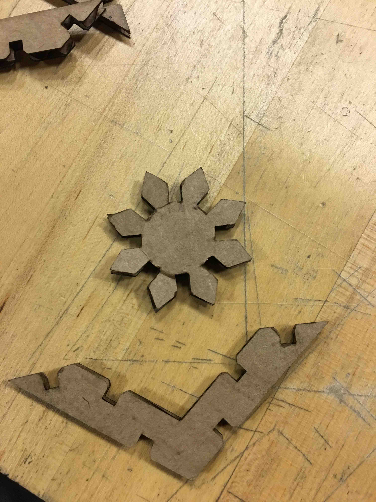
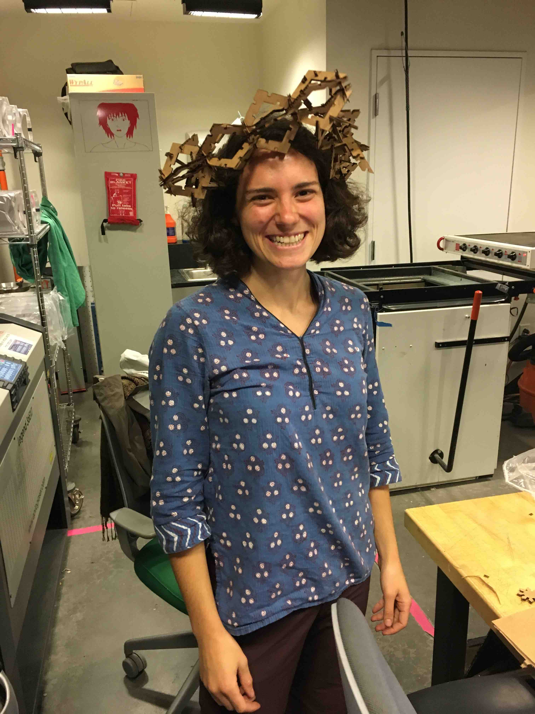
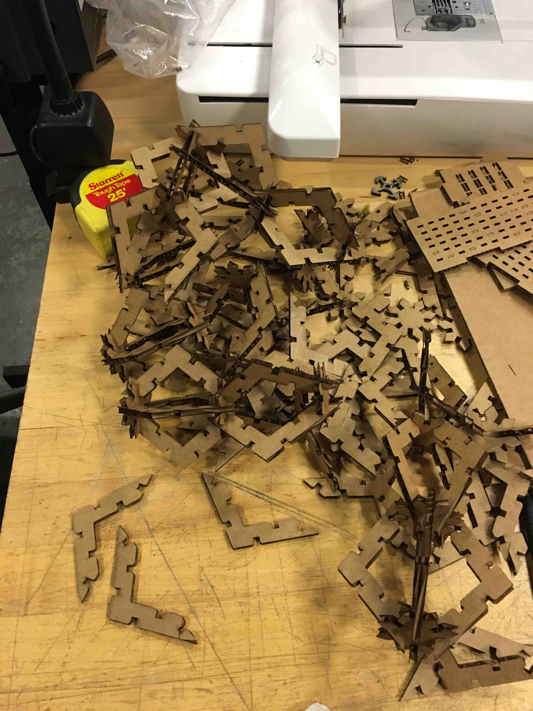
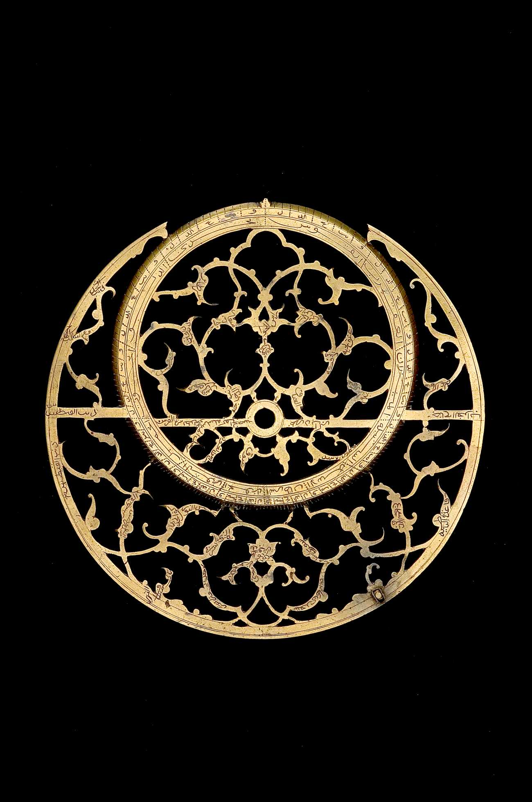

On Tuesday I learned something about parametric designs: they’re rather difficult. Or, at least, they require a different sort of thinking from drawing on paper. You want to make the bare minimum element, and then replicate that symmetrically across the shape.
For the lasering cardboard project, I decided to go for a sort of hub-and-spoke thing-- with a triangular element that could make a little lantern-like shape. The ultimate goal was a silly hat. My first attempt at parametric CADing in Fusion360 didn’t completely describe the shape that I wanted, so any small manipulation would end up in disaster:
 My friend Ned came along and helped me out by explaining how to define my parameters on the outside of a circle:
My friend Ned came along and helped me out by explaining how to define my parameters on the outside of a circle:

My triangle element wasn’t as neatly defined, so it ended up crashing Fusion360 a few times:

Eventually, I made something moderately serviceable and got it into CorelDraw:

Then I cut out lots of little shapes:
I also learned something on the vinyl cutter! I have an image of an astrolabe from the photo collection of Oxford’s Museum of the History of Science.
For the lasering cardboard project, I decided to go for a sort of hub-and-spoke thing-- with a triangular element that could make a little lantern-like shape. The ultimate goal was a silly hat. My first attempt at parametric CADing in Fusion360 didn’t completely describe the shape that I wanted, so any small manipulation would end up in disaster:
My triangle element wasn’t as neatly defined, so it ended up crashing Fusion360 a few times:
Eventually, I made something moderately serviceable and got it into CorelDraw:
Then I cut out lots of little shapes:

And stuck them together to make little modules:
Finally I made a crown of thorns:

Which I spent another hour trying to turn into a proper silly hat-- but my triangular pieces didn’t have much structural integrity when trying to hold the weight of a bunch more pieces, and it all fell apart:

I eventually packed all my pieces up and resolved to try again soon, perhaps with a different arrangement...
I also learned something on the vinyl cutter! I have an image of an astrolabe from the photo collection of Oxford’s Museum of the History of Science.
